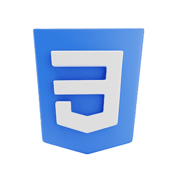
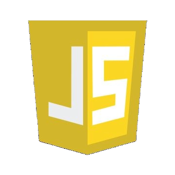

A Propos
J'ai toujours aimé explorer le monde du digital et du numérique, la curiosité d'apprendre de nouveaux languages et de nouvelles technologies , me permet d'acquérir de nouvelles compétences.
De nature débrouillard et indépendant dans mon travail, j’aime passer du temps à résoudre des problèmes et réaliser du code de qualité. Mes valeurs de travail : clean code, flexibilité, performance et sérieux.
Compétences
- 
- 

- node
- react
- php
- mysql
Langues
- Francais, langue maternelle
- Anglais, compétences professionnelles
- Espagnol, compétences professionnelles
Centre d'interet
- Jeux vidéos
- L'informatique
- Musique
- Sport Mécanique
- Cinéma
- Art en général
Jordan Valente
Etudiant en Développement Web Web Mobile
- 07.64.81.24.27
- Rue De La Poste , 59910 Bondues
Expériences
professionelles
2009 2015
Manoeuvre/Aide-Macon à temps plein
- Terrassement et nettoyage de chantier
- Aide pose bordure et assainissement
Avril 2015 Mars 2020
Conducteur-receveur chez Keolis Nord
- Vérification et conduite d'autobus (standard et articulé)
- Transport de voyageurs sur différentes lignes régulières(réseau ilévia)
- Accueil des passagers et délivrance des titres de transport
- Contrôle des tickets
Depuis Juillet 2020
Conducteur-receveur chez Transdev Artois-Gohelle
- Vérification et conduite d'autobus (standard et articulé)
- Transport de voyageurs sur différentes lignes régulières(réseau Tadao)
- Accueil des passagers et délivrance des titres de transport
- Contrôle des tickets
Études
& formations
2008
Obtention du baccalauréat Scientifique, Lycée Saint-Rémi de Roubaix
2015
Obtention du Titre professionel Conducteur de voyageurs, AFT/IFTIM de Wasquehal
2024
Candidat au Titre professionel de Développeur Web Web Mobile, Foreach Academy de
Marcq-en-Baroeul
Autres
experiences
Permis B, possession d'une voiture
Permis D